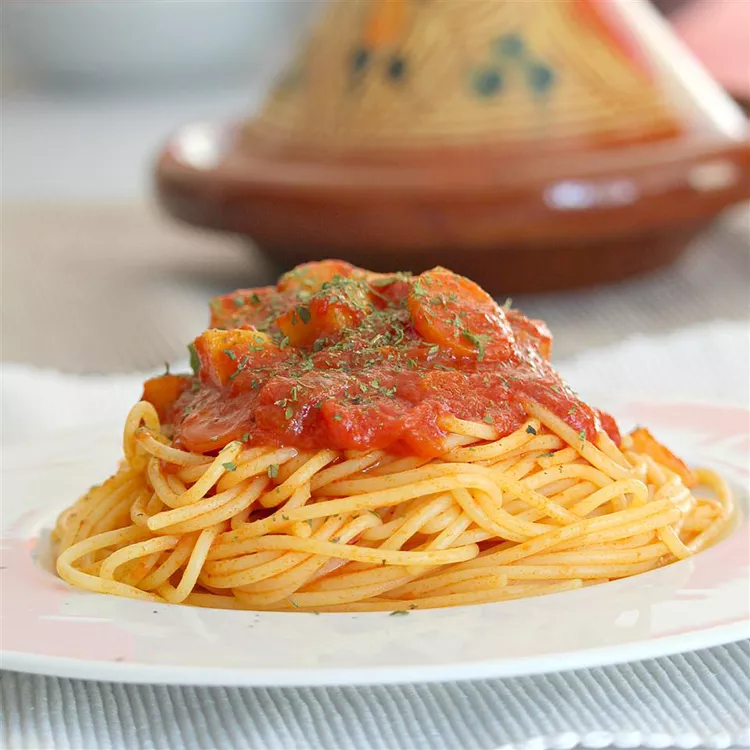

Somalispaghettisauce
Home

Description
This Somali-style spaghetti sauce recipe has my own little tweak to it. We make this once a week in our house (my daughter craves it!). I hope you enjoy this as much as we do!
Ingredients
- 2 tablespoons chopped fresh cilantro
- 1 teaspoon paprika
- 4 cloves garlic
Steps
- Place cilantro and garlic in the bowl of a food processor; pulse until finely chopped.
- Toast cumin seeds in a small pot over low heat until fragrant, 2 to 3 minutes. Cool, 5 minutes. Grind into a powder using a spice grinder or a mortal and pestle.